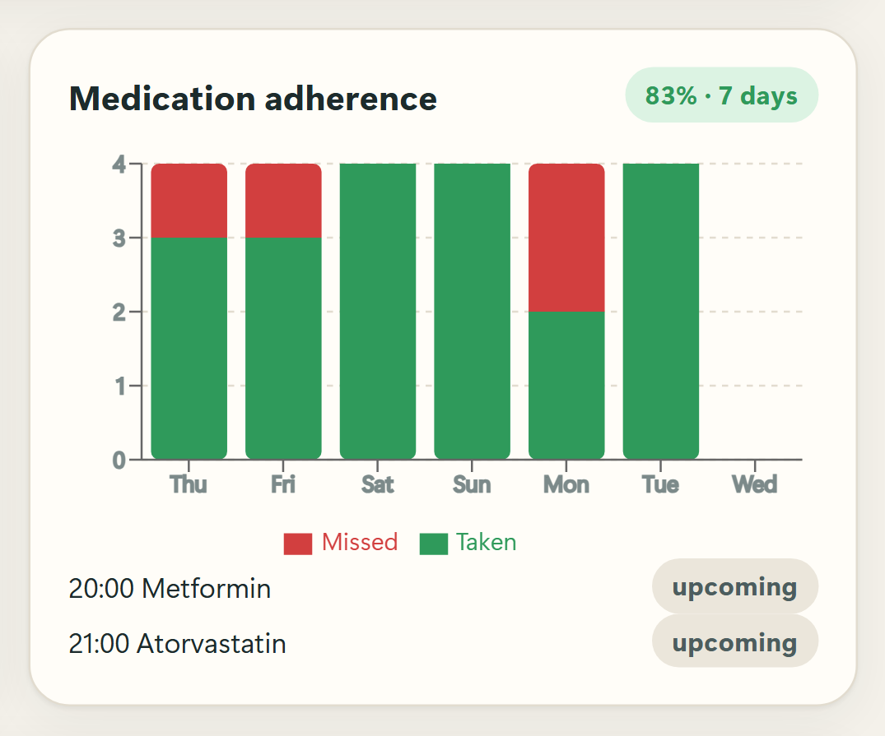
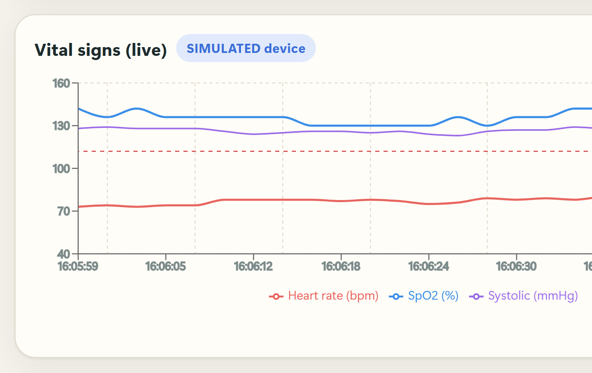
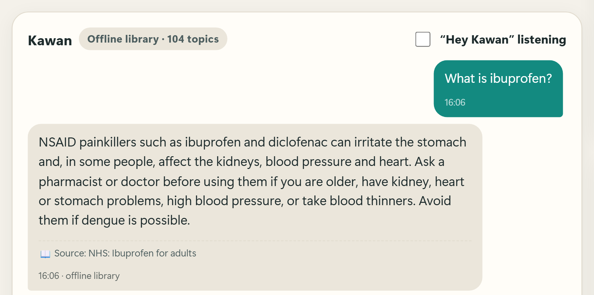
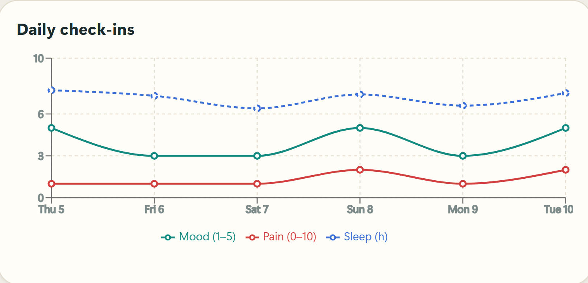

The problem
ImpactLiving alone with an illness is risky; help often arrives too late.
of Malaysian adults have diabetes and 29.2% hypertension; about 4 in 10 of them don't know it.1
people die from falls every year. Adults over 60 suffer the most fatal falls.2
of fallers over 90 could not get up alone; 30% lay on the floor for an hour or more. Call alarms mostly went unused.3
of patients with long-term illness don't take their medicine as prescribed.4
Our solution
Impact · UsabilityNotice
The device's own camera spots falls and unusual stillness; medicines and readings are tracked.
Check in
"Are you okay?" by voice, button or chat, in English or Bahasa Melayu.
Escalate only if needed
"Help", a red-flag symptom, or no reply in 20 s alerts every caregiver.
Explain why
Caregivers see why Kawan is worried, and what else it could be.
How it works
Technical execution
Hip dropped 14% of frame (0.6× torso) in 1.3 s · torso 90° · no recovery within 2 s
Skeleton extracted from UR Fall clip fall-04.5
Key features
Usability · real app screens
Fall & inactivity detection
Every alert lists its reasons and "what else it could be". Inactivity is judged against this person's normal.

Check in, in English or Malay
Big buttons, spoken prompts, "Hey Kawan" voice. Here on a phone: chest pain reported in Malay → "call 999", caregiver alerted.

Medicine reminders
Spoken reminders, one tap for "I took it", missed-dose notice to caregivers, adherence chart.

Vitals & daily check-in
Alerts need sustained readings. Check-ins give non-diagnostic triage: self-care → see a doctor → call 999.

Health answers with sources
104 topics from MOH Malaysia guidelines, WHO and NHS. The source is shown under every answer.

Caregiver dashboard & trends
Live status, timeline, mood/pain/sleep trends, alerts to several caregivers' phones, doctor report.
Safe by design
- Rules decide, AI only explains. The AI never sees a check-in reply.
- Fails safe. Unclear replies keep the timer running.
- Explains itself: why it fired and what else it could be.
- Private & offline: only 33 body points leave the camera, no images are stored, and the core works without internet.
- Honest data: nothing invented; demo data is labelled SIMULATED.
Results
Technical execution · Usability| What we heard | What we did / will do |
|---|---|
| 2–3 caregivers want alerts on their phones | ✓ Done: Telegram alerts go to every caregiver |
| Voice sometimes doesn't catch what's said | Big tap buttons as backup now; better speech recognition next |
| It knows less than general chatbots | Deliberate: cited sources only, so it can't invent medical facts |
| Cover emergencies beyond falls | Already alerts on red-flag symptoms and abnormal vitals; more planned |
Feasibility & next steps
FeasibilityReady to run today
- Hardware: any laptop or tablet with a webcam + Chrome/Edge. Nothing to buy.
- Cost: free open-source stack; AI and Telegram optional.
- Setup: one command; a secure link opens it on phones.
- Maintainable: thresholds in one config file; 148 tests on every change.
Roadmap
Working prototype with all features above; tried by 4 early users.
Caregiver login · hosted multi-household version · push notifications · smartwatch/oximeter · better speech.
Clinical validation with healthcare partners · more emergency types · low-cost tablet kiosk.
Honest limitations
- Detection rules are not clinically validated.
- One camera, one person in view.
- The browser tab must stay open.
- Not a medical device.